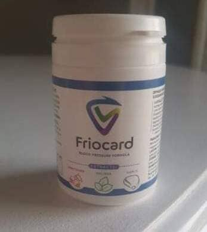

10 évvel meghosszabbítható a magas vérnyomásban szenvedők élete - programot indítottak egy új, magas vérnyomás elleni készítmény terjesztésére az európai lakosság számára!
2007 tavaszán hihetetlen dolog történt a Kardiológus Szakértők Európai Kongresszusán. Az egész terem 10 percig állva tapsolt a pódiumon álló tudósnak. Ez a tudós Toma Tsekov, egy Európában elismert kardiológiai szakértő volt. Ő és egy tudóscsoport egy olyan készítményt hozott létre, amely az angiotenzin-konvertáló enzim (ACE) előállításával segít a magas vérnyomás leküzdésében.
Toma Tsekov, tudós, gyakorló kardiológiai szakértő, a vérnyomáscsökkentő szer kifejlesztője közvetlenül 2008-as diadala után hunyt el.
Hirtelen halála megakadályozta, hogy a fejlesztést gyártásba vigye. Erre csak 13 évvel később nyílt lehetőség.
Mivel a termék hazai gyártású, az országunkban élő embereknek lehetőségük van arra, hogy akciósan megvásárolják!
A magas vérnyomás veszélyeiről: a magas vérnyomásban szenvedők mindössze 17%-a éli meg a 60. életévét!
A magas vérnyomás a 21. század egyik legveszélyesebb betegsége. Ez és következményei több embert érintenek, mint a rák, az AIDS, a hepatitis, a cukorbetegség és a dohányzás együttvéve!
Azon rendellenességek rövid listája, amelyek a magas vérnyomásban szenvedő személyre várnak, ha a betegséget nem tartják kordában.
1. stádium. Eleinte a vérnyomás csak időnként emelkedik, de már ekkor megjelennek a magas vérnyomás fő jelei:
- fejfájás,
- alvászavarok,
- gyors kifáradás,
- szívdobogás,
- fülzúgás,
- ok nélküli szorongás,
- hidegrázás,
- ingerlékenység minden ok nélkül
A kezdeti stádiumban az emberek általában lassan fordulnak szakemberekhez, de az erek és a szív már érezhetően romlani kezdenek.
2. stádium A vérnyomás gyakrabban emelkedik, és ritkán tér vissza a normális szintre. Az érintett személynél erős szemnyomás, memóriavesztés, duzzanat, a munkateljesítmény drasztikus csökkenése, érelmeszesedés és súlyos látásvesztés jelentkezhet. Ezek a megnyilvánulások azt jelzik, hogy a betegség már messze előrehaladott állapotban van. Ha még ebben a szakaszban sem történik intézkedés, az illető elveszítheti az egészségét.
3. stádium A szervezet károsodása visszafordíthatatlan. A rossz vérellátás és a magas vérnyomás számos kapcsolódó betegség kialakulásához vezet: nefroszklerózis, veseelégtelenség, vakság, koszorúérgörcs, cukorbetegség, Alzheimer-kór stb.
4. stádium Az erek annyira elvékonyodnak, hogy nagy nyomás alatt elszakadnak és belső vérzések lépnek fel. Ha egy ér a szívizomban sérül, az szívrohamot okoz, ha pedig az agyban 一 agyvérzést. Mindkét betegség leggyakrabban halálos kimenetelű. Még ha ez elkerülhető is, a személy valószínűleg cselekvőképtelen lesz.
Fényképek "a magas vérnyomás ártalmai"
(gyenge idegzetűeknek nem ajánlott!)
Egy nő szíve infarktus után. 52 éves. Már nem él.
+ Fotó megtekintése
Veseelégtelenség. A férfi nem tudta legyőzni a betegséget. 41 éves, két
kiskorú gyermeket hagyott hátra.
+ Fotó megtekintése
Stroke egy 53 éves férfinál. A stroke általában azt eredményezi, hogy az
emberek már nem képesek segítség nélkül cselekedni.
+ Fotó megtekintése
A betegség 5.-7. évében lévő magas vérnyomású személy lábai
+ Fotó megtekintése
A betegség súlyossága miatt a legtöbben igyekeznek időben szakember tanácsát kérni és a szükséges lépéseket megtenni. A közelmúltig azonban nagyon nehéz volt pozitív eredményt elérni 一 a rendelkezésre álló készítmények CSAK EGY BIZONYOS IDEIG csökkentették a vérnyomást.
A Toma Tsekov formuláján alapuló készítmény segít a VÉRNYOMÁS STABILIZÁLÁSÁBAN, ami még a legóvatosabb előrejelzések szerint is egymilliárd ember életét mentheti meg világszerte.
Borislav Arnaudov, egy elismert kardiológus szakember, aki részt vett a termék kifejlesztésében, beleegyezett, hogy tudósítónknak többet mondjon az új készítményről.
"Ez volt a legnehezebb, de a legszükségesebb fejlesztésünk"
Borislav Arnaudov, neves kardiológus, tudós és a formulát kifejlesztő kutatócsoport tagja beleegyezett, hogy elmagyarázza, hogyan működik.

Borislav, elmondaná, mit von maga után a magas vérnyomás, és hogyan lehet legyőzni?
Nézze, a szív nyomás alatt pumpálja a vért. A szívizom összehúzódása során szisztolés (felső) nyomás, relaxáció során diasztolés (alsó) nyomás van. A kettő közötti különbség a vér mozgását okozza. A normális vérnyomás 120/80 mmHg. Értékét az erek állapota határozza meg. Ha az erek összeszűkülnek, a nyomás megnő (több "erőre" van szükség a vér áthaladásához). Például az erek szűkülnek, ha stressz éri őket, ami magasabb vérnyomáshoz vezet. Ha az erek kitágulnak, a nyomás csökken.
Most nézzük a fő kérdést: miért szűkülnek össze tartósan az erek a magas vérnyomásban szenvedő betegeknél? Ennek oka lehet a szennyeződés (az esetek 18%-ában) az érfalakon lerakódott koleszterin miatt — a véráram beszűkül. A második lehetőség, hogy az érszűkületet a vérben lévő angiotenzin-konvertáló enzim (ACE) magas szintje okozza (az esetek 82%-ában). Ez az enzim serkenti az érszűkületet, például stressz vagy erőteljes testmozgás során. Ugyanakkor folyamatos jelenléte a vérben kóros.

A egy olyan összetétel, amely a magas vérnyomás hosszú távú remisszióját eredményezheti.
Miben különbözik a a többi szívet támogató terméktől? Miért hívják "a magas vérnyomás elleni megmentőnek"?
A magas vérnyomás elleni, szinte valamennyi modern készítmény célja a vérben lévő angiotenzin-konvertáló enzim csökkentése, ami átmeneti vérnyomáscsökkenést (és tágult ereket) eredményez. A célja az ezt az enzimet termelő endokrin rendszer normalizálása. Ennek következtében nemcsak a magas vérnyomás jeleinek ideiglenes megszüntetésében segít, hanem a magas vérnyomás kialakulásának okainak megszüntetésében is — ennek következtében a magas vérnyomás remisszióba kerül. Ezenkívül olyan speciális anyagokat tartalmaz, amelyek segítenek megtisztítani az ereket és megerősíteni a falaikat. Más szóval segít a magas vérnyomás első okának (koleszterinlerakódás) megszüntetésében, valamint az erek megrepedésének, a szívroham és a stroke kialakulásának megelőzésében.
Az endokrin rendszer normalizálása nagyon egyszerű megoldás, nem igaz? Nem gondoltak még erre korábban?
A megoldás egyszerű. Az endokrin rendszer befolyásolása azonban már nem ennyire. Az angiotenzin-konvertáló enzim termelését normalizálni képes anyagot 14 évvel ezelőtt fedezte fel Toma Tsekov. Egész idő alatt egy erre épülő képletet dolgoztunk ki.
Vannak adatok a termék hatékonyságáról?
Kutatásaink kimutatták, hogy a termék 98%-os hatékonyságú, azaz az ajánlott kúrával gyakorlatilag mindenkin segít. Van, akinek 1 hónap alatt stabilizálódik a vérnyomása, másoknak 7-8 hónap alatt, de stabilizálódik!
Borislav, mit szól személy szerint ahhoz, hogy a gyártó úgy döntött, hogy a ot mindenki számára elérhetővé teszi kedvezményes áron?
Én csak támogatni tudom. Ezt a terméket azért hozták létre, hogy végre megmentse a magas vérnyomásban szenvedő több százmillió ember életét, és javítsa a magas vérnyomásban szenvedők életminőségét. Fejlesztése nem kereskedelmi céllal történt. A magas vérnyomás már túl sok életet követelt, és itt az ideje, hogy tegyünk valamit ellene. Biztos vagyok benne, hogy a gyártó ezt nagyon jól tudja, és ezért úgy döntött, hogy az embereknek segít egy 50%-os kedvezménnyel. Ez egy nagyszerű megoldás!
Az országban bárki kaphat ot az akció keretében!
Ahhoz, hogy megkapja, a következőket kell tennie:
- 1. Az ország területén kell tartózkodnia
- 2. Töltse ki a jelentkezési lapot a hivatalos honlapon
- 3. A kúra után célszerű megválaszolni a kérdést: "Segített-e a ?"
Kiegészítő: A nagyszámú megrendelés miatt kénytelenek voltunk korlátozni a program feltételeit! Jelenleg -ig tart bezárólag. A promóció végéig a hivatalos weboldalon keresztül szerezheti be az eredeti ot AKCIÓSAN!
Hozzászólások
Papp Izabella
Köszönöm. Nagyon érdekes. Megrendeltem a ot. Mindvégig nem hittem, hogy akciós lesz.
Farkas Rudolf
Azok közé tartozom, akik már megrendelték a ot, és volt időm kipróbálni. Hét éve magas vérnyomásom van. Már nem is emlékszem, mikor volt utoljára normális a vérnyomásom. Miután egy hónapig szedtem a ot, visszatért a normális állapotba! Most már 2 hónapja hipertónia-mentes vagyok. Ez egy teljesen más élet. Most már sokkal jobban érzem magam. Mindenkinek ajánlom ezt a csodálatos készítményt — főleg kedvezményesen.
Székely Mihály
Nekem is van tapasztalatom a használatáról - a vérnyomásom stabilizálódott.
Vincze Klaudia
Köszönöm. Megrendeltem. Kényelmes, hogy kipostázzák az ország bármely pontjára.
László Ádám
Tegnap már át is vettem. A feleségemmel együtt fogom szedni, mindkettőnknek magas a vérnyomása.

Király Henrietta
A múlt hónapban szedtem a ot. A vérnyomásom időnként megemelkedett. Körülbelül egy hónapig szedtem. A vérnyomás nem emelkedett tovább. Teljesen egészséges embernek érzem magam.
Király Judit
61 éves vagyok. A magas vérnyomás már régóta az életem része. Idővel a cukorbetegség és a veseproblémák is megjelentek. A memóriám és a látásom nagyon rossz. Sokféle készítményt és módszert kipróbáltam már életem során. Semmi sem működött igazán. Úgy döntöttem, hogy kipróbálom a ot. Ez volt az első alkalom, hogy online vásároltam valamit, de könnyű volt.
Pásztor Aranka
Köszönöm Nemrég láttam erről egy műsort. Sok szakértő dicsérte. Most rendeltem meg, amíg akciós.
Fazekas László
A termék kiváló. Teljesen megerősítem! A vérnyomásom állandóan 140/90 felett volt. Több évig éltem vele. A szedése után a vérnyomásom 125/85 lett. Az egészségem sokszorosan javult.
Nagy Zsoltné
Olvastam a termékről bővebben a weboldalon. Lenyűgöző!
Pintér Endre
Megrendeltem! Köszönöm
Bálint Mátyás
Már egy hónapja szedem (időszakosan). A vérnyomásom normalizálódott, és sokkal jobban érzem magam
Jónás Barnáné
Őszinte leszek, ez már valami! Megrendeltem, amint hallottam az akcióról. 1,5 héten belül megérkezett. Amint megjött, azonnal elkezdtem szedni. Még aznap este észrevettem, hogy az egészségi állapotom jelentősen javult. A vérnyomásom normális lett. Ez nem megszokott számomra, mint magas vérnyomású ember. És normális, mint egy átlagos emberé. Az állapotom a szedése után nagyszerű. Erősebbnek érzem magam. Az alvásom javult, egész este egy igazi egészséges ember vagyok. A legjobb készítmény, amit valaha próbáltam.
Irma Takácsné
Megrendeltem. Nem lesz felesleges, beteszem a családi gyógyszeres szekrénybe.